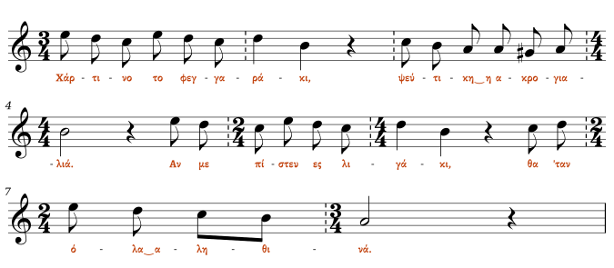

Ζευγάρι 1
Δείτε τη λύση
Ημιτόνιο (μι–φα)
Μαθήματα μουσικής ανάγνωσης · Μέρος Β΄
Οδηγός ασκήσεων με ήχο
Ιωάννης ΙδομενέωςΔιευθυντής Χορωδιών · Λυρικός Τραγουδιστής · Καθηγητής Φωνητικής Τέχνης

Όταν μια άσκηση είναι ψηλή για τη φωνή σας, τραγουδήστε τη μια οκτάβα χαμηλότερα. Στις γραπτές ασκήσεις γράψτε πρώτα την απάντησή σας σε ένα χαρτί, και μετά πατήστε «Δείτε τη λύση».
Η μικρότερη απόσταση ανάμεσα σε δύο νότες είναι το ημιτόνιο. Δύο ημιτόνια κάνουν έναν τόνο. Ανάμεσα στις λευκές νότες του πιάνου, ημιτόνιο υπάρχει μόνο στο μι–φα και στο σι–ντο.
Ημιτόνιο (μι–φα)
Τόνος (ντο–ρε)
Τόνος (σολ–λα)
Ημιτόνιο (σι–ντο)
Τόνος (φα–σολ)
Τόνος (ρε–ντο, προς τα κάτω)
Ημιτόνιο (ντο–σι, προς τα κάτω)
Τόνος (λα–σολ, προς τα κάτω)
Τ · Τ · Η · Τ · Τ · Τ · Η
Η · Τ · Η · Τ · Τ · Τ
Κάθε θέση της κλίμακας έχει έναν αριθμό, τη βαθμίδα. Η πρώτη νότα είναι το 1. Τα ονόματα των νοτών μένουν πάντα ίδια, και η βαθμίδα αλλάζει ανάλογα με το πού είναι το 1.
Όλες οι ασκήσεις αυτής της ενότητας είναι στη ντο μείζονα: το ντο είναι το 1. Κάτω από τις νότες γράφεται η βαθμίδα τους. Στις πρώτες ασκήσεις τη γράφουμε σε όλες τις νότες, και μετά μόνο στην πρώτη.
Το σι κάτω από το ντο είναι το 7. Ακούγεται σαν να θέλει να ανέβει στο 1.
Αν ένα άλμα δεν βγαίνει, τραγουδήστε σιγά τις νότες ανάμεσα, και μετά ξαναδοκιμάστε το άλμα.
3 · 5 · 8 (ή 1) · 2 · 6 · 4 · 7 · 1
2 · 6 · 4 · 7 · 5 · 3
Η δίεση (♯) ανεβάζει τη νότα κατά ένα ημιτόνιο. Η ύφεση (♭) την κατεβάζει κατά ένα ημιτόνιο. Η αναίρεση (♮) ακυρώνει τη δίεση ή την ύφεση, και η νότα γίνεται ξανά φυσική.
Ένα σημείο αλλοίωσης ισχύει για τις ίδιες νότες που ακολουθούν μέσα στο ίδιο μέτρο. Με τη διαστολή σταματά να ισχύει.
φα δίεση · σι ύφεση · ντο δίεση · μι ύφεση · σολ δίεση · λα ύφεση
φα · ντο · φα δίεση · ντο δίεση · λα δίεση (ή σι ύφεση)
μι · σι · σι ύφεση · μι ύφεση · σολ ύφεση (ή φα δίεση)
Φα δίεση. Η δίεση της πρώτης νότας ισχύει ως το τέλος του μέτρου.
Φα, φυσικό. Η αναίρεση ακυρώνει τη δίεση.
Η μείζονα κλίμακα έχει τη σειρά: τόνος, τόνος, ημιτόνιο, τόνος, τόνος, τόνος, ημιτόνιο. Τα ημιτόνια είναι στο 3–4 και στο 7–8. Την ίδια σειρά μπορούμε να την ξεκινήσουμε από οποιαδήποτε νότα, με τις διέσεις ή τις υφέσεις που χρειάζονται.
Το 7 λέγεται προσαγωγέας. Απέχει ένα ημιτόνιο από το 8 και μας οδηγεί στο 1.
Εδώ τραγουδάμε στη σολ μείζονα (με φα δίεση), στη φα μείζονα (με σι ύφεση) και στη ρε μείζονα (με φα δίεση και ντο δίεση).
σολ μείζονα
σολ μείζονα
Το φα δίεση (7) ακουμπά στο σολ (8). Ακούστε πώς σας οδηγεί εκεί.
σολ μείζονα
σολ μείζονα
φα μείζονα
φα μείζονα
Στη φα μείζονα ο προσαγωγέας είναι το μι.
ρε μείζονα
ρε μείζονα
Ο προσαγωγέας εδώ είναι το ντο δίεση.
σολ · λα · σι · ντο · ρε · μι · φα♯ · σολ
φα · σολ · λα · σι♭ · ντο · ρε · μι · φα
ρε · μι · φα♯ · σολ · λα · σι · ντο♯ · ρε
φα♯ · μι · ντο♯
Οι διέσεις και οι υφέσεις μιας κλίμακας γράφονται μία φορά, στην αρχή του πενταγράμμου, και ισχύουν σε όλο το τραγούδι.
Οι διέσεις μπαίνουν πάντα με τη σειρά φα, ντο, σολ, ρε, λα, μι, σι. Οι υφέσεις με την ίδια σειρά ανάποδα: σι, μι, λα, ρε, σολ, ντο, φα.
Με διέσεις: η τελευταία δίεση είναι το 7, και ένα ημιτόνιο πιο πάνω βρίσκεται το 1. Με υφέσεις: η προτελευταία ύφεση είναι το 1. Με μία ύφεση είμαστε στη φα μείζονα. Χωρίς οπλισμό είμαστε στη ντο μείζονα.
Σολ μείζονα. Η δίεση είναι φα♯ (7), και ένα ημιτόνιο πάνω βρίσκεται το σολ.
Ρε μείζονα. Η τελευταία δίεση είναι ντο♯ (7), και ένα ημιτόνιο πάνω βρίσκεται το ρε.
Λα μείζονα. Η τελευταία δίεση είναι σολ♯ (7), και ένα ημιτόνιο πάνω βρίσκεται το λα.
Μι μείζονα. Η τελευταία δίεση είναι ρε♯ (7), και ένα ημιτόνιο πάνω βρίσκεται το μι.
Φα μείζονα. Με μία ύφεση είμαστε πάντα στη φα μείζονα.
Σι♭ μείζονα. Η προτελευταία ύφεση είναι το σι♭.
Μι♭ μείζονα. Η προτελευταία ύφεση είναι το μι♭.
Λα♭ μείζονα. Η προτελευταία ύφεση είναι το λα♭.
δύο διέσεις (φα♯, ντο♯) · μία ύφεση (σι♭) · τρεις διέσεις (φα♯, ντο♯, σολ♯) · δύο υφέσεις (σι♭, μι♭)
Μέσα σε μια μελωδία μπορεί να εμφανιστεί μια δίεση, μια ύφεση ή μια αναίρεση που δεν υπάρχει στον οπλισμό. Είναι ένα τυχαίο σημείο αλλοίωσης, και ισχύει ως το τέλος του μέτρου.
Πριν τραγουδήσετε, βρείτε τη νότα με το τυχαίο σημείο και τραγουδήστε τη χωριστά, με τις νότες γύρω της.
φα μείζονα
Στο δεύτερο μέτρο το σι είναι φυσικό. Στο τέταρτο μέτρο ισχύει ξανά ο οπλισμός: σι ύφεση.
ντο μείζονα
Το φα δίεση ακουμπά στο σολ, όπως ο προσαγωγέας στο 1. Στο τρίτο μέτρο το φα είναι ξανά φυσικό.
ντο μείζονα
σολ μείζονα
ντο μείζονα
Το σι ύφεση κατεβαίνει απαλά προς το λα.
Η τέταρτη νότα: ντο δίεση.
Η τέταρτη νότα: σι φυσικό.
Η δεύτερη και η τέταρτη νότα του πρώτου μέτρου. Στο δεύτερο μέτρο το φα είναι φυσικό, γιατί η διαστολή ακυρώνει τη δίεση.
Η ελάσσονα κλίμακα έχει τη σειρά: τόνος, ημιτόνιο, τόνος, τόνος, ημιτόνιο, τόνος, τόνος. Τα ημιτόνια είναι στο 2–3 και στο 5–6.
Η σχετική ελάσσονα έχει τον ίδιο οπλισμό με μια μείζονα και ξεκινά ένα τριημιτόνιο (τρία ημιτόνια) κάτω από το 1 της. Η σχετική της ντο μείζονας είναι η λα ελάσσονα, της σολ μείζονας η μι ελάσσονα, της φα μείζονας η ρε ελάσσονα.
ντο μείζονα
λα ελάσσονα
Ο ίδιος οπλισμός, και το 1 είναι τώρα το λα. Ακούστε πώς αλλάζει το χρώμα.
λα ελάσσονα
λα ελάσσονα
λα ελάσσονα
μι ελάσσονα
μι ελάσσονα
ρε ελάσσονα
ρε ελάσσονα
λα ελάσσονα · μι ελάσσονα · ρε ελάσσονα · σι ελάσσονα · σολ ελάσσονα
ντο μείζονα · σολ μείζονα · φα μείζονα · ρε μείζονα
μι · φα♯ · σολ · λα · σι · ντο · ρε · μι
Το μι γίνεται μι♭. Αλλάζει μόνο το 3.
Ο οπλισμός μένει ο ίδιος. Αλλάζουν μόνο το 6 και το 7, όταν ανεβαίνουν κατά ένα ημιτόνιο με δίεση ή αναίρεση μπροστά στη νότα.
Φυσική: όπως λέει ο οπλισμός. Αρμονική: ανεβαίνει το 7, και γίνεται προσαγωγέας. Μελωδική: όταν η μελωδία ανεβαίνει προς το 8, ανεβαίνουν το 6 και το 7. Όταν κατεβαίνει, μένουν όπως λέει ο οπλισμός.
Στην ανάγνωση κοιτάμε αν υπάρχει δίεση ή αναίρεση μπροστά στο 6 ή στο 7. Αν δεν υπάρχει, τραγουδάμε ό,τι λέει ο οπλισμός.
λα ελάσσονα
λα ελάσσονα
Από το φα στο σολ δίεση η απόσταση είναι τρία ημιτόνια. Τραγουδήστε το αργά.
λα ελάσσονα
Στο πρώτο μέτρο ανεβαίνουμε με φα δίεση και σολ δίεση. Στο τρίτο μέτρο κατεβαίνουμε με σολ και φα φυσικά.
μι ελάσσονα
α) φυσική · β) αρμονική · γ) μελωδική (ανεβαίνοντας)
Το ρε γίνεται ρε♯. Είναι το 7, ο προσαγωγέας.
Ο ίδιος οπλισμός ταιριάζει σε μια μείζονα και στη σχετική της ελάσσονα. Για να βρούμε ποια από τις δύο είναι:
Βρείτε την κλίμακα κάθε μελωδίας. Μετά ανοίξτε τη λύση και ακούστε τη μελωδία.
Λα ελάσσονα: τελειώνει στο λα, και το σολ♯ είναι ο προσαγωγέας.
Ντο μείζονα: τελειώνει στο ντο.
Σολ μείζονα: τελειώνει στο σολ.
Μι ελάσσονα: τελειώνει στο μι, και το ρε♯ είναι ο προσαγωγέας.
Φα μείζονα: τελειώνει στο φα.
Ρε ελάσσονα: τελειώνει στο ρε, και το ντο♯ είναι ο προσαγωγέας.
Ρε μείζονα: τελειώνει στο ρε.
Σι ελάσσονα: τελειώνει στο σι, και το λα♯ είναι ο προσαγωγέας.
Στα 6/8 κάθε μέτρο έχει έξι όγδοα, που μετριούνται στα δύο: δύο ομάδες των τριών. Ο πρώτος χρόνος είναι ισχυρός και ο τέταρτος ημιισχυρός.
Μετράμε: ΕΝΑ, δύο, τρία, τέσσερα, πέντε, έξι. Πείτε πρώτα τον ρυθμό, και μετά τραγουδήστε.
ντο μείζονα
ντο μείζονα
σολ μείζονα
λα ελάσσονα
Οι διαστολές μπαίνουν μετά το φα, και μετά το μι με τη στιγμή.
δύο · τρία · έξι
Πολλά τραγούδια ξεκινούν με μία έως τρεις νότες πριν από το πρώτο μέτρο. Αυτές είναι το levare, και το μέτρο του έχει λιγότερους χρόνους από τα υπόλοιπα. Συχνά το τελευταίο μέτρο έχει τους χρόνους που λείπουν.
Στα τραγούδια με στίχους το μέτρο ακολουθεί τον τονισμό των λέξεων: η τονισμένη συλλαβή πέφτει στον πρώτο χρόνο. Όταν χρειάζεται, το μέτρο αλλάζει. Αν ακολουθήσουμε τον ρυθμό ενός σταθερού μέτρου, οι λέξεις τονίζονται λάθος.
ντο μείζονα
Το levare είναι το 5. Μας οδηγεί στο 8, στον ισχυρό χρόνο του πρώτου μέτρου.
σολ μείζονα
λα ελάσσονα
λα μείζονα
Το levare είναι μία νότα: το μι, η πέμπτη βαθμίδα.
λα ελάσσονα

Οι διακεκομμένες διαστολές μπαίνουν πριν από κάθε τονισμένη συλλαβή. Τα μέτρα αλλάζουν: 3/4, 4/4, 2/4.
Κάτω από κάθε νότα γράφεται η βαθμίδα της. Βρείτε από ποια βαθμίδα ξεκινά κάθε τραγούδι, τραγουδήστε το με τα ονόματα των νοτών, και μετά με τα λόγια που ξέρετε.
ρε ελάσσονα
σολ μείζονα
ρε μείζονα
φα μείζονα
✎ 1 Τ · Τ · Η · Τ · Τ · Τ · Η
✎ 2 Η · Τ · Η · Τ · Τ · Τ
✎ 3 3 · 5 · 8 (ή 1) · 2 · 6 · 4 · 7 · 1
✎ 4 2 · 6 · 4 · 7 · 5 · 3
✎ 5 φα δίεση · σι ύφεση · ντο δίεση · μι ύφεση · σολ δίεση · λα ύφεση
✎ 6 φα · ντο · φα δίεση · ντο δίεση · λα δίεση (ή σι ύφεση)
✎ 7 μι · σι · σι ύφεση · μι ύφεση · σολ ύφεση (ή φα δίεση)
✎ 8 Φα δίεση. Η δίεση της πρώτης νότας ισχύει ως το τέλος του μέτρου.
✎ 9 Φα, φυσικό. Η αναίρεση ακυρώνει τη δίεση.
✎ 10 σολ · λα · σι · ντο · ρε · μι · φα♯ · σολ
✎ 11 φα · σολ · λα · σι♭ · ντο · ρε · μι · φα
✎ 12 ρε · μι · φα♯ · σολ · λα · σι · ντο♯ · ρε
✎ 13 φα♯ · μι · ντο♯
Ποια μείζονα; 1 Σολ μείζονα. Η δίεση είναι φα♯ (7), και ένα ημιτόνιο πάνω βρίσκεται το σολ.
Ποια μείζονα; 2 Ρε μείζονα. Η τελευταία δίεση είναι ντο♯ (7), και ένα ημιτόνιο πάνω βρίσκεται το ρε.
Ποια μείζονα; 3 Λα μείζονα. Η τελευταία δίεση είναι σολ♯ (7), και ένα ημιτόνιο πάνω βρίσκεται το λα.
Ποια μείζονα; 4 Μι μείζονα. Η τελευταία δίεση είναι ρε♯ (7), και ένα ημιτόνιο πάνω βρίσκεται το μι.
Ποια μείζονα; 5 Φα μείζονα. Με μία ύφεση είμαστε πάντα στη φα μείζονα.
Ποια μείζονα; 6 Σι♭ μείζονα. Η προτελευταία ύφεση είναι το σι♭.
Ποια μείζονα; 7 Μι♭ μείζονα. Η προτελευταία ύφεση είναι το μι♭.
Ποια μείζονα; 8 Λα♭ μείζονα. Η προτελευταία ύφεση είναι το λα♭.
✎ 14 δύο διέσεις (φα♯, ντο♯) · μία ύφεση (σι♭) · τρεις διέσεις (φα♯, ντο♯, σολ♯) · δύο υφέσεις (σι♭, μι♭)
✎ 15 Η τέταρτη νότα: ντο δίεση.
✎ 16 Η τέταρτη νότα: σι φυσικό.
✎ 17 Η δεύτερη και η τέταρτη νότα του πρώτου μέτρου. Στο δεύτερο μέτρο το φα είναι φυσικό, γιατί η διαστολή ακυρώνει τη δίεση.
✎ 18 λα ελάσσονα · μι ελάσσονα · ρε ελάσσονα · σι ελάσσονα · σολ ελάσσονα
✎ 19 ντο μείζονα · σολ μείζονα · φα μείζονα · ρε μείζονα
✎ 20 μι · φα♯ · σολ · λα · σι · ντο · ρε · μι
✎ 21 Το μι γίνεται μι♭. Αλλάζει μόνο το 3.
✎ 22 α) φυσική · β) αρμονική · γ) μελωδική (ανεβαίνοντας)
✎ 23 Το ρε γίνεται ρε♯. Είναι το 7, ο προσαγωγέας.
α) Λα ελάσσονα: τελειώνει στο λα, και το σολ♯ είναι ο προσαγωγέας.
β) Ντο μείζονα: τελειώνει στο ντο.
γ) Σολ μείζονα: τελειώνει στο σολ.
δ) Μι ελάσσονα: τελειώνει στο μι, και το ρε♯ είναι ο προσαγωγέας.
ε) Φα μείζονα: τελειώνει στο φα.
ζ) Ρε ελάσσονα: τελειώνει στο ρε, και το ντο♯ είναι ο προσαγωγέας.
η) Ρε μείζονα: τελειώνει στο ρε.
θ) Σι ελάσσονα: τελειώνει στο σι, και το λα♯ είναι ο προσαγωγέας.
✎ 24 Οι διαστολές μπαίνουν μετά το φα, και μετά το μι με τη στιγμή.
✎ 25 δύο · τρία · έξι